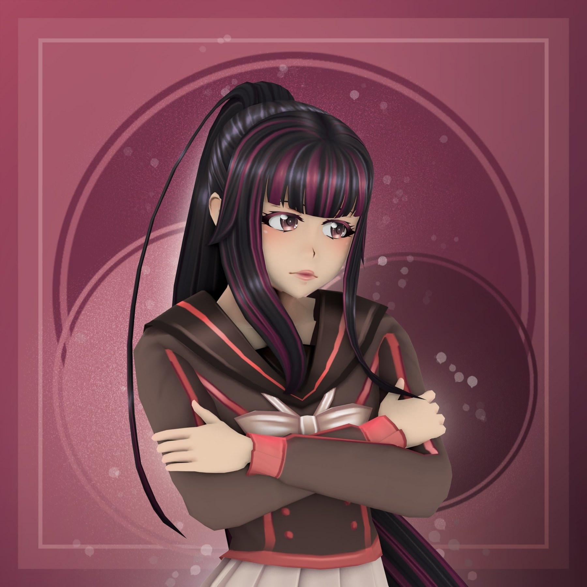

i animate stuff in blender and mod yandere simulator. sometimes i go outside

idles walks runs jumps and anything else a character needs. i redo things until they move smooth and don't look stiff
walks, food, being out with friends. good for my brain after staring at keyframes for hours
hair, outfits, physics and my own animations put into the game. everything gets posted on my server
ponytails twin tails curls and one set of tentacles. if it's meant to move it gets bones
i learnt it in college and now i'm at uni studying to be a game dev. i also scripted my own auto bundler for yandere sim so i don't have to bundle everything by hand
i like commissioning ocs and then animating them
slashers and creepy atmospheres
mostly playing the games i end up modding
idle, walk and sitting with a school bag
my octopus girl running for her life
a shy idle i made for someone
please don't reupload or redistribute my animations
my main oc. her idle is just her crossing her arms because that's what she does
art by nathan erotica
the happy one. her tentacle hair has its own rig so it can actually move
art by nathan erotica
she's the one carrying the bookbag in my animation
art by nathan erotica
hi i'm halcyon. i make 3d animations, mostly anime girls in sailor uniforms, which makes sense if you've ever played yandere simulator
it started with wanting characters in the game to move better and turned into rigging, bundling and eventually people commissioning me. i learnt coding in college, which is how i started writing my own tools, and now i'm at uni studying to be a game dev
i care a lot about motion feeling soft and real, like the hair and skirt still moving after the body stops
when i'm not doing that i'm out somewhere or playing something. if you like my stuff join my server
halcyon
all my updates go on my discord server. new mods, downloads, sneak peeks of what i'm animating and help with the bundler
if the invite says it's invalid just add me on discord